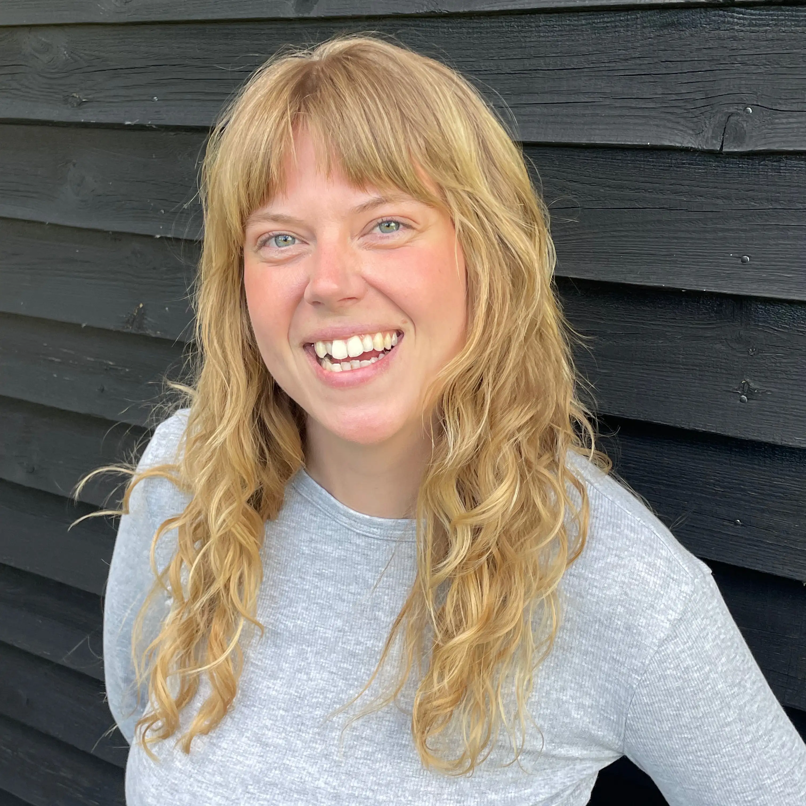

Researchdrevet multimediedesigner med fokus på konceptudvikling og digital realisering.
LIDT OM MIG
Jeg læser til multimediedesigner og har især interesse for research, konceptudvikling og digitalt design. Jeg synes det er spændende at undersøge brugere og behov og omsætte det til visuelle løsninger, der giver mening i praksis.
På 1. semester har jeg arbejdet med webdesign, kodning, brugerundersøgelser og visuel identitet, og fået en forståelse for hele designprocessen fra idé til færdigt produkt.
I Basadurs problemløsningsprofil er jeg primært conceptualizer, hvor jeg trives bedst i idéudvikling og de tidlige faser af processen. Samtidig kan jeg godt lide at følge projekter helt til dørs og se dem blive til noget konkret. Jeg glæder mig til at udvikle mig videre gennem uddannelsen og blive endnu skarpere på min profil.
